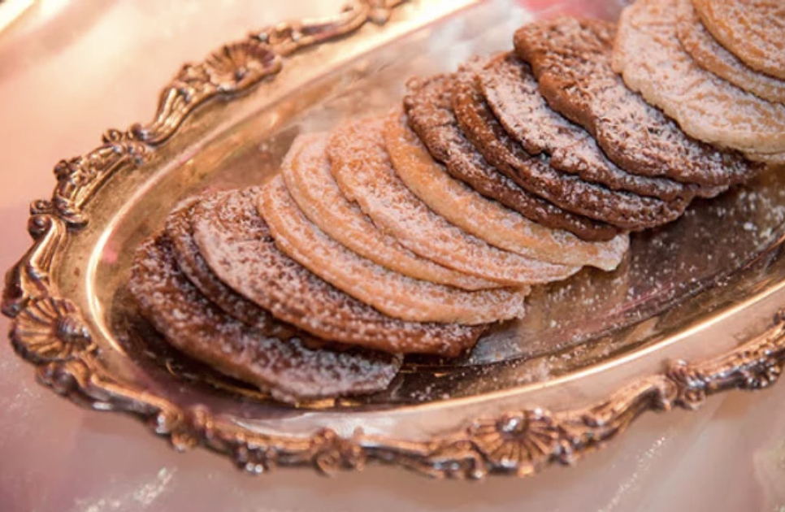
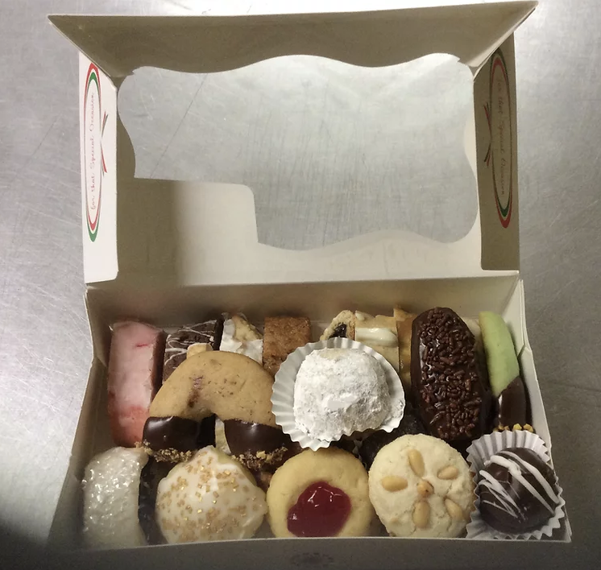

We guarantee you will not find the variety that we offer anywhere else. Our traditional cookie trays contain over twenty-five different kinds of cookies and biscotti--all made from scratch from different doughs with their own special flavors.
We do NOT make one dough and shape it 25 different ways! There are about twenty-eight cookies per pound; we make them small so our guests can eat as many as they'd like. We recommend 1 1/2-pound trays for tables of 10 or more. Ask about our cookie favors, gift boxes, and individual servings! Our products are very customizable, and we are happy to work within your budget.

We guarantee you will not find the variety that we offer anywhere else. Our traditional cookie trays contain over twenty-five different kinds of cookies and biscotti--all made from scratch from different doughs with their own special flavors. We do NOT make one dough and shape it 25 different ways! There are about twenty-eight cookies per pound; we make them small so our guests can eat as many as they'd like. We recommend 1 1/2-pound trays for tables of 10 or more. Ask about our cookie favors, gift boxes, and individual servings! Our products are very customizable, and we are happy to work within your budget.
Cookies:

Cherry slices
One of our favorites...almond flavoring and glaze, chock full of cherries and walnuts.

Peanut Butter Balls
These are the first to disappear on our cookie displays! A perfect marriage of dark chocolate and creamy peanut butter.

Rose Spritz Cookies Who doesn't love a butter cookie?? We pipe these in vanilla, chocolate, and raspberry and sandwich them with marshmallow buttercream. Can't you just picture these at a garden party or bridal shower??

Spumoni/Rainbow Cookies
This cookie was created by Italian Americans as a tribute to their beloved flag. We layer this traditional almond paste-based cookie with raspberry and apricot filling. THE BEST!

Pizzelle
Classic Italian cookies baked in a waffle iron. We make two kinds, anise, and chocolate raspberry. Great with ice cream or gelato! These can be added to your cookie or wandi tray or sold by the pound.
Cookie Packages

Wandi bushel
It is an Italian tradition for the bride and groom to pass out wandi from a bushel basket! I have different size bushel baskets; this one holds about 75 wandi.
$75
"Designer" Tray
1/2 pound of wandi surrounded by a pound of cookies. The best of both worlds! Makes a great centerpiece!
$150

Basic Cookie Tray $25

Deluxe Cookie Tray $30
Pizzelle $22.50

Cookie Charcuterie Box $35
Small Assorted Cookie Box $12.50
Wandi Tray $13.50
LOCAL ORDERS PLEASE CALL US!
401-450-9276
Since our products are baked to order, please call at least five days in advance. We do not have a storefront and cannot honor last-minute orders.
Thank you for your understanding!
Please call or email for custom orders.